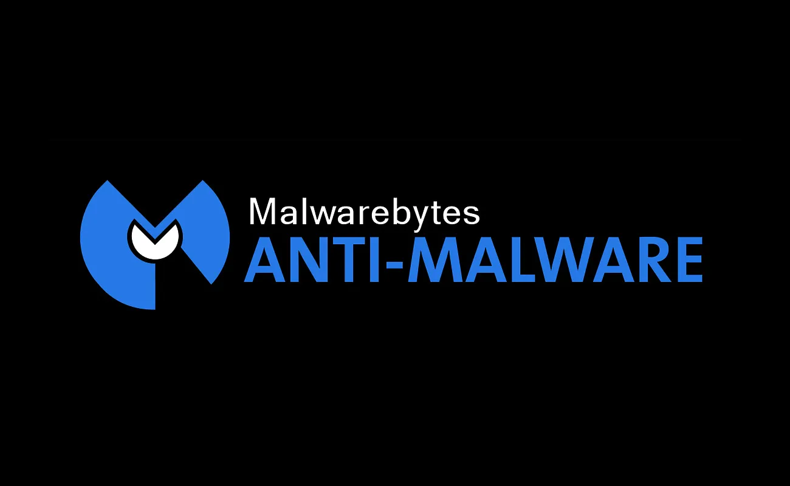

Trojan
Disguises itself as legitimate software to trick users into executing malicious code.
2.4
Common threats that infect systems — and the tools and methods used to detect, remove, and prevent them.
How malicious and unwanted software infects systems, spreads, and harms users.
Disguises itself as legitimate software to trick users into executing malicious code.
Gains privileged system-level access while hiding its presence, processes, and files from detection tools.
Attaches malicious code to clean files and spreads across systems when host programs execute.

Secretly monitors user activity, gathering sensitive personal data and browser habits without consent.
Encrypts critical files or locks system access, demanding payment to restore data availability.
Captures every keystroke typed on a system to harvest credentials, passphrases, and private messaging data.
Infects the Master Boot Record (MBR) or partition boot sector to load before the operating system boots.
Hijacks target system CPU/GPU processing power in the background to mine cryptocurrency without authorization.
Intrusive software installed secretly to track real-time location, messages, and calls of a specific individual.
Operates entirely within system RAM and native administrative utilities (e.g., PowerShell) without writing files to disk.
Generates unwanted pop-up advertisements on the screen, often bundling with software installations.
.jpeg)
Unintended software installed alongside desired apps that degrades performance or changes browser settings.
Tools and methods for finding malware, cleaning infected systems, and stopping infections before they start.

Command-line environment used to repair system files, fix boot configurations, and remove persistent malware offline.
.jpg)
Monitors individual host devices continuously for suspicious behavior, providing real-time alerts and remediation options.
.jpg)
Outsourced 24/7 security service providing threat hunting, monitoring, and incident response via dedicated analysts.
.jpg)
Integrates security data across endpoints, networks, cloud environments, and email systems for unified threat analysis.
Scans and protects systems using known file signatures to block legacy malware threats like viruses and worms.

Detects and remediates complex, modern threats including spyware, Trojans, PUPs, and zero-day variants.

Filters inbound and outbound email traffic to block spam, malicious attachments, and phishing links before they reach inboxes.

Filters incoming and outgoing network traffic at the local OS level using defined security rules to block unauthorized connections.

Teaches users how to identify social engineering traps, suspicious URLs, and malicious file downloads to prevent initial infection.
Erases the primary drive completely and installs a fresh operating system to eliminate deeply persistent infections like rootkits.